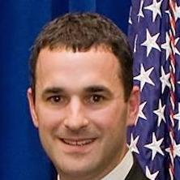

<div id="speakers">
<div class="cell">
<p><strong>Daniel ("Danny") Werfel</strong>  is a Director in the Public Sector practice of The Boston Consulting Group (BCG). In this role, he helps the firm's government clients overcome challenges to achieve lasting improvements in organizational and operational effectiveness and efficiency.</p>

<p>Mr. Werfel joined BCG in March 2014 from the Internal Revenue Service (IRS), where he was personally selected by President Barack Obama and Secretary of the Treasury Jack Lew to serve as Acting Commissioner in the wake of the agency’s recent organizational crisis. In that role, he oversaw the implementation of the nation’s tax system, navigating an array of challenges and tasks, including the appointment of the IRS’s first chief risk officer, the deployment of an agency-wide risk management program, and the execution of necessary steps to restore public trust.</p>

<p>Prior to the IRS, Mr. Werfel spent 16 years with the US Office of Management and Budget (OMB), where he provided leadership for policy and implementation in all aspects of federal financial management, eventually taking on the role of Federal Controller—the government’s chief financial officer. After that, he assumed the responsibilities of the Deputy Director for Management at OMB, where he was responsible for leading a broad array of management initiatives across government in areas such as information technology, procurement, performance management, and personnel policy.</p>

<p>Mr. Werfel is a fellow at the National Academy of Public Administration and formerly was a member of the IRS Oversight Board, the Government Accountability and Transparency Board, and the Federal Accounting Standards Advisory Board. In 2013 he was named Government Computer News’s “Government IT Executive of the Year,” as well as being named one of the “Federal 100” by Federal Computer Week.
He holds a Bachelor of Science in Industrial and Labor Relations (with honors) from Cornell University, a Juris Doctor (with honors) from the University of North Carolina, Chapel Hill, and a Master of Public Policy from Duke University.</p>
</div>
</div>